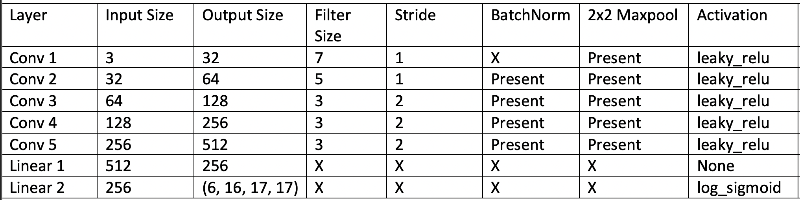
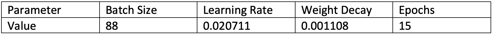

Data Base Collection:
My dataset was constructed using the scryfall REST API. I choose to only consider one card type for my database, creature. This is because different card types in MTG have completely different mechanical features and I felt the creature card type had the features that were most connected to the art of its cards. Using this API I was able to query several important features of the cards: name, color (Not necessarily connected to the art, color instead refers to the mechanical identity of the card), creature type (human, elf, etc.), and converted mana cost (cost of the card to play). I also was able to query for the raw bytes of each card’s art. Card images were saved under unique identifiers that were then attached to each of the features extracted.
Four version of this ard art dataset were generated. Two featured all single-faced creature cards. The first of these datasets was full sized images whereas the second was a dataset of reduced sized images due to memory limitation reasons as well as improved model performance. The second two database also contain full sized and reduced sized images but only include art from after 2003. This is because there was very little consistency in MTG art in the early stages of the game which led to a wide variety of art styles being used including a good deal of abstract art. The art design of the game was then standardized in 2003 and the general art style implemented then has persisted into the present.
Data Processing:
Since the MTG dataset was collected from scratch, a great degree of data processing was required to prepare the dataset for training. First, I filtered the dataset into to two subsets, one containing only cards with a single color and one containing both cards with a single color and cards with two colors. Since magic has five colors, as well as cards with no color, the single color dataset has six different color labels and the dataset with two colors has sixteen different color labels.
When processing the creature type data there were a few different issues that needed to be considered. The first of these is that many creatures have multiple creature types. Often the first type refers to their identity (human, elf, etc.) and further types refer to profession or class (noble, wizard, etc.). To simplify this type data to act as labels I only kept the first creature type of each card. Another issue was that many creature types in MTG have very few representatives such that it would be very difficult to train a model to classify those types. Because of this I developed a new subset of the data for type containing only creature types with at least 100 representatives. This filtered subset featured 17 distinct labels.
Network Design:
For this project I was designing a CNN for classification. My approach to network design was to initially build a basic CNN model and then expand and change it based on both experimental input and insights from research of similar models. One thing that was on my mind from the very beginning of design was what modification might be needed in a network that dealt with art rather than photographic images. Ultimately these two mediums are not so dissimilar, but I did take inspiration for parts of my network design, most importantly the sizes of my convolutional filter, from other classifiers on art. I also experimented with several different Relu-like activation function (leaky-relu, relu, and selu) but found leaky-relu to perform the best out of all of them.
One of the biggest problems my network faced during this project was overfitting. Initially my network was extremely overfitting to the data. Test loss would form a parabola throughout the epochs as its performance got significantly worse as training loss continued to improve. My initial design did not feature any dropout and adding in dropout between my two linear layers as well as in between my hidden layers improved this greatly. Lastly, its worth mentioning that several of the design choices for my network, as well as some other features of the model, like batch size, were made for performance reasons. Early in the project I decided to train the model using my discrete graphic cards, which had 8 GB of Vram. Though I feel I was able to make a fully fledge and functional model within this limitation, its worth noting that certain features like layer size were limited by the amount of memory available to me.
The exact specification of the design can be seen below:

Hyper Parameter Tuning:
I handled hyperparameter using optuna, a python framework for hyperparameter tuning. I trained four different hyperparameters: Epochs, Learning Rate, Batch Size, and Weight Decay. I heuristically defined the ranges of each of these variables. These values can be seen in the table below. Values were selected from this range using the TPESampler, sample provided by Optuna which fits a Gaussian Mixture Model to help improve the effectiveness of hyperparameter tuning.xs
Note: Preferably I would have been able to tune separate parameter for each of my different classification tasks. Unfortunately, my tuning pipeline ended up taking more than 24 hours to complete a run, so I was unable to do so.
Hyperparameter Values:
